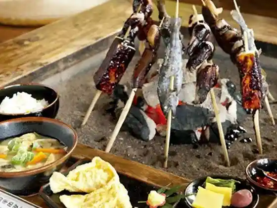
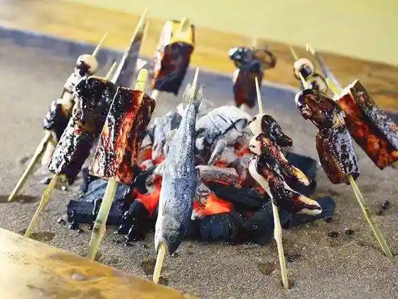
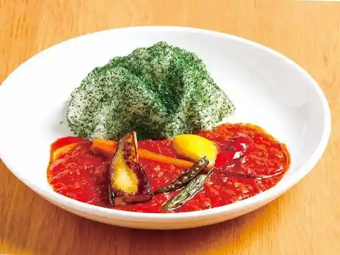

Takamori Dengaku Hozon Kai
Takamori, Kumamoto · 0967-62-0234 · Official / source link

Takamori Dengaku Village
Takamori, Kumamoto · 0967-62-1899 · Official / source link

Tokumaru Shokudo
Takamori, Kumamoto · 0967-62-0096 · Official / source link
Guriru Do Kato
Takamori, Kumamoto · 0967-62-1020 · Official / source link

Kyuka Village Minamiaso
Takamori, Kumamoto · 0967-62-2111 · Official / source link
Takamori Toge Sembonzakura
Takamori, Kumamoto · Official / source link
Neko Gaku
Takamori, Kumamoto · 0967-62-1111 · Official / source link
Takamori Yusui Tonneru Park
Takamori, Kumamoto · 0967-62-3331 · Official / source link
Yama Yasushi
Takamori, Kumamoto · 0967-62-0888 · Official / source link
Joba Burugurasu
Takamori, Kumamoto · 0967-62-3366 · Official / source link
Takamori Toge
Takamori, Kumamoto · 0967-62-1111 · Official / source link
Gatsu Mawari Park
Takamori, Kumamoto · 0967-62-1628 · Official / source link
Ana Sako Inari Shrine
Takamori, Kumamoto · 0967-62-1111 · Official / source link
Minamiaso Tetsudo
Takamori, Kumamoto · 0967-62-0058 · Official / source link
Takamori Dono no Sugi
Takamori, Kumamoto · 0967-62-1111 · Official / source link
Sen Ko Iwa (Ugetoiwa)
Takamori, Kumamoto · 0967-62-2913 · Official / source link
Sakasa Neko Gaku
Takamori, Kumamoto · 0967-62-1111 · Official / source link
Ue Iromi Kumano Za Shrine (Kamishikimikuma no Zajinja)
Takamori, Kumamoto · 0967-62-2300 · Official / source link
Yama Village Shuzo Gomeigaisha
Takamori, Kumamoto · 0967-62-0001 · Official / source link
Kutsurogito Ryori no Yado reshuku Mori no Renga Kan
Takamori, Kumamoto · 0967-62-3158 · Official / source link
Aso Kafe SOSUI (Minamiaso Kashi Tokoro So Mizu)
Takamori, Kumamoto · 0967-62-1771 · Official / source link
Minamiaso Fureai Zoo Feariiteru
Takamori, Kumamoto · 0967-62-2613 · Official / source link
Furankii Zo
Takamori, Kumamoto · 0967-62-1111 · Official / source link
Oku Aso Furutsu Garden
Takamori, Kumamoto · 090-3197-3898 · Official / source link
Daia So Buruberii Sono Asoburu
Takamori, Kumamoto · 0967-62-2030 · Official / source link
Aso Kafe SOSUI
Takamori, Kumamoto · 0967-62-1771 · Official / source link
Ta no Shika Tei
Takamori, Kumamoto · 0967-62-1188 · Official / source link
Minami Tetsu Kafe
Takamori, Kumamoto · 0967-62-1373 · Official / source link
Fukumame
Takamori, Kumamoto · 0967-62-1200 · Official / source link
Ue Iro Kumano Za Shrine
Takamori, Kumamoto · 0967-62-2300 · Official / source link
Takamori Yusui Tonneru
Takamori, Kumamoto · 0967-62-1111 · Official / source link